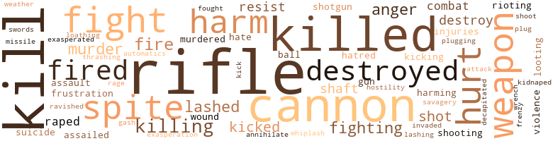

Null-Frequency Impulser, by Coleman, James Nelson (1969)
36 music-related terms matched in this text.
Most frequent terms in this topic: instruments (14); section (4); whistled (3); instrument (3); dance (3)
chorus.n.01
Definition: any utterance produced simultaneously by a group
| word | sentence |
|---|---|
| chorus | Immediately there was a chorus of exclamations and greetings as , all at once , they suddenly became aware of Catherine standing in their midst . |
dance.n.01
Definition: an artistic form of nonverbal communication
| word | sentence |
|---|---|
| dance | There , it went into a weird , gyrating dance . |
| dance | Simultaneously , before the consoles of the servomechanisms ' master brain , the tiny sphere of luminescence continued its weird dance , manipulating switches , dials and levers as if by the power of its will alone . |
| dance | A MOMENT after Catherine and Steve were conveyed to the center of the cavern and held there suspended in mid-air while the two sword-long drill bits whirled before their stomachs , the tiny sphere of bright yellow luminescence ceased its weird dance before the control console of the servomechanisms ' master brain and sped to a position directly in front of their faces . |
kick.v.04
Definition: kick a leg up
| word | sentence |
|---|---|
| kicking | As this answer was given , Valerie and Linda were in the process of being subdued by the secret police ; but from their effort to restrain the two struggling , biting , kicking and scratching young girls , a major battle had developed . |
| kicking | She was lifted high into the air , her arms flailing and her beautiful legs kicking frantically in a ; vain effort to free herself . |
musical_instrument.n.01
Definition: any of various devices or contrivances that can be used to produce musical tones or sounds
| word | sentence |
|---|---|
| instruments | scientists who helped him build the instruments , tools and machines in this cavern , the scientific knowledge which enabled them to do so was supplied by me . |
| instruments | All the instruments , tools and machines necessary to do the job were built elsewhere on Earth by your most brilliant scientists following my instructions . |
| instruments | Would you tell me there are no Earthmen who would betray their race for possession of the advanced scientific instruments and machines ' which you see . |
| Instrument | " Instrument check complete ! " |
| instruments | As the ship rose , Jerry was busy over the pilot 's console , reading his instruments and simultaneously playing his fingers over the buttons before him , dampening out the yaw , pitch and roll which the aligning gyroscopes could not handle . |
| instruments | Several feet from the pilot , in the astrogator 's chair , Eleanor concentrated over a bank of instruments even more complex than those before the pilot . |
| instrument | On the other side of the pilot , opposite the astrogator 's chair , sat Phyllis , who served as the flight dynamics officer , constantly updating the readouts and checking for any instrument discrepancies . |
| instruments | " So far the instruments indicate that our performance is right on the mark ! " |
| instruments | " My instruments show , " Louise suddenly spoke up from the communications console , " that the spaceport has a radar lock oh us ! " |
| instrument | As the giant ship topped out its trajectory , he reached up to his overhead instrument panel , lifted a guard and switched on his Doppler computer-controller unit . |
| instruments | Down in the secret cavern , Catherine and the Tisza , aided by Dr. Fields , supervised some of the servomechanisms as they loaded the contents of the cavern , its fantastic machines , instruments and tools , onto the crane elevator which then hoisted them up out of the hole and swiveled on its frame to swing its load into one or the other of the cargo freighter 's gigantic hatches . |
| instruments | All the marvelously advanced machines and fantastic instruments and tools had been moved out and stowed in the holds of the atomic freighter . |
| instruments | The base of the inner walls was spanned by a complex of computers , telemetering equipment , radar , radio and astrogation instruments . |
| instruments | Strung out into space along the rim of the space platform on tether lines were , various tools , instruments and packing boxes full of materials and supplies . |
| instruments | Our separation distance is increasing at the rate of - " She quickly checked the instruments and made the calculation in her mind . |
| instrument | His glowing sphere of a body penetrated halfway into , the instrument panel and instantly caused an electrokinetic dusturbance in some of the circuits . |
| instruments | Strange instruments and handsomely shaped weapons lay gleaming on a raised dais . |
| instruments | While she was comparing the notes in the booklet with the actual readings on the console 's instruments , Steve became absorbed in reading over her shoulder . |
preamble.n.01
Definition: a preliminary introduction to a statute or constitution (usually explaining its purpose)
| word | sentence |
|---|---|
| preamble | " My name is Inspector Becket , " he said without preamble . |
rhythm.n.04
Definition: the arrangement of spoken words alternating stressed and unstressed elements
| word | sentence |
|---|---|
| rhythm | As Catherine ; drifted forward , she saw that the console 's instruct lights j were blinking and flashing frantically in an intense , pulsating rhythm . |
section.n.01
Definition: a self-contained part of a larger composition (written or musical)
| word | sentence |
|---|---|
| section | As she turned a set of dials , the scene on the viewer shifted down Capital Avenue , across a whole section of the city in seconds , through a vast suburb and finally came to rest on a bird 's - eye view of the private rocket field of the Rogers Group . |
| section | A half-moon silhouette of Earth filled one corner of their view , and beyond it they could see the brilliant corona of a section of the sun . |
| section | It looks as if it will sweep across this section of the space platform . |
| section | She held up her hand for silence as the floor of the barn suddenly stopped its descent and a section of the elevator shaft slid silently back to reveal a large , well lighted cavern . |
tone.v.01
Definition: utter monotonously and repetitively and rhythmically
| word | sentence |
|---|---|
| intoned | " I 've been waiting for you , " his lips intoned . |
| intoned | She extended her hand into the air and intoned soothingly , coaxingly : " Come here - I wo n't hurt you ! " |
tune.n.01
Definition: a succession of notes forming a distinctive sequence
| word | sentence |
|---|---|
| lines | " But why ? " asked Jackie , her face creased in lines of horror . |
whistle.v.01
Definition: make whistling sounds
| word | sentence |
|---|---|
| whistled | Incredulous , Catherine whistled mentally . |
| whistled | „ Steve whistled . |
| whistled | He whistled . |
305 violence-related terms matched in this text.
Most frequent terms in this topic: rifle (34); kill (26); killed (21); cannon (21); fight (11)
abhorrence.n.01
Definition: hate coupled with disgust
| word | sentence |
|---|---|
| loathing | exclaimed Inspector Becket , feeling a sudden loathing for the thing in his mind . |
aggravation.n.01
Definition: an exasperated feeling of annoyance
| word | sentence |
|---|---|
| exasperation | Catherine stared in desperate confusion at the maze of switches and dials on the teleportation machine 's console and blurted in exasperation : " How in Space do you expect me to turn it off ? " |
anger.n.01
Definition: a strong emotion; a feeling that is oriented toward some real or supposed grievance
| word | sentence |
|---|---|
| anger | Everything was forgotten ; but from somewhere deep inside of her mind , a mighty anger surged upward and filled her whole consciousness with a violent and unreasoning hatred of Trabzon and everything which he represented . |
| anger | Even the Tisza , whimpering in agony from the merciless lashing which Trabzon was giving her , was forgotten as Catherine 's mind was suddenly consumed with a vibrant and bursting anger . |
| anger | The anger j pulsed and swelled into a thing uncontrollable . |
| anger | Then , with a soundless cry of violent anger , it pounced upon him . |
| anger | Then , as Catherine held him in a mental grip of pure anger , the Tisza weakly bludgeoned him again and again until his light grew pale and his mental fiber disintegrated into mists of incoherent thought . |
| anger | Yes , the Tisza replied , I think what happened was that your anger released some hidden mechanism within your mind , which in turn triggered your hitherto dormant psi faculty . |
attack.v.01
Definition: launch an attack or assault on; begin hostilities or start warfare with
| word | sentence |
|---|---|
| assailed | Suddenly a memory of the flood of tiny baby Triskellions which had bubbled from her forehead assailed her mind . |
| assailed | Suddenly she was assailed by memories of the old days when it had been only a large tract of waste land such as one might find in any large city . |
attack.v.02
Definition: attack in speech or writing
| word | sentence |
|---|---|
| attack | Try to set your mind against the backlash which will follow when I attack him . |
automatic_rifle.n.01
Definition: light machine gun
| word | sentence |
|---|---|
| automatics | She was standing a hundred feet away at the base of a ramp which led off the jetway , and the jetcoupe , now driverless except for the automatics , wasspeeding on into the city . |
battle.v.01
Definition: battle or contend against in or as if in a battle
| word | sentence |
|---|---|
| combat | Before too many people were killed , some way to combat them had to be found . |
| combat | " Thousands of people have been killed - and you destroy the one weapon that we 've come across so far that can be used to combat them ! " |
cannon.n.04
Definition: heavy automatic gun fired from an airplane
| word | sentence |
|---|---|
| cannon | Beam from a laser cannon hit him squarely in the chest . |
| cannon | " He told me that he was shot with a laser cannon while trying to escape from three of their agents . " |
| cannon | his left , and drew a large , pistollike laser cannon from an armpit holster . |
| cannon | Instantly he froze ; then ; slowly he raised the laser cannon and took careful aim . |
| cannon | Finally , ; when he saw no other movement , he lowered the pistollike cannon and cautiously moved forward again . |
| cannon | For an instant he was dazed ; he recovered to find himself still clutching the null-frequency impulser under one arm and the laser cannon in his right hand . |
| cannon | Then , still clutching the null-frequency impulser as if his very life depended upon it , he struggled to his feet and began firing his laser cannon at Catherine Rogers as fast as she could teleport from one spot to another . |
| cannon | Kick the laser cannon from his hands ! |
| cannon | In an instant she was looking down the barrel of his laser cannon , and then instantaneously she was standing in a new spot . |
| cannon | Ca n't you at least wrench the laser cannon from his hand ? |
| cannon | Your safety must be my first consideration ----- Suddenly the Tisza 's thoughts broke off as Inspector Becket again fired his laser cannon and she instantly teleported Catherine to another spot . |
| cannon | You did it repeatedly when Inspector Becket was firing his laser cannon at me . |
| cannon | When Patricia reached the workbench , she pulled a laser cannon from a niche in the bench where it rested and handed it to Catherine . |
| cannon | Then she slipped the laser cannon into the holster and buckled it to her side . |
| cannon | She had risen to her feet , and adjusting the laser cannon strapped to her waist , walked over to the wrecked vidphone booth . |
| cannon | Suddenly the laser cannon which had been holstered at her side was in her hand , and she was firing at the right front tire of the jetmobile . |
| cannon | Holstering the laser cannon , she sprinted the rest of the way across the jet-thoroughfare to the sidewalk on the same side of the street as the sniper . |
| cannon | She was grasping at her laser cannon ; but even as she clutched the handle and drew it , she realized that she would be unable to raise it in time and fire . |
| cannon | Then she put the Space Patrolman 's service blaster into the vacant laser cannon holster at her waist . |
| cannon | When General Anderson reached the top , Steve yanked him into the air lock and ; then ducked just in time as a bolt from a heavy-caliber laser cannon flashed over his head and filled the air lock ; with searing heat . |
| cannon | Before it could swing shut , however , two lightning bolts from a heavy-duty laser cannon flashed into the air lock , forcing them all to hit the deck as the shots ricocheted against the bulkheads before , dissipating . |
craze.n.02
Definition: state of violent mental agitation
| word | sentence |
|---|---|
| frenzy | And , as she pounded , she cried in a frenzy of emotion : " Let her alone ! |
cut.n.05
Definition: a wound made by cutting
| word | sentence |
|---|---|
| gash | Before any of them could move to object , he made deep , slashing gash across the front of his chest down into his lower rib cage . |
decapitate.v.01
Definition: cut the head of
| word | sentence |
|---|---|
| decapitated | Police and fire department investigators are at a loss to determine the cause of the mysterious explosion which decapitated Dr. Kingsley , completely demolished his laboratory , and was felt by all the residents in the immediate area . |
destroy.v.04
Definition: put (an animal) to death
| word | sentence |
|---|---|
| destroyed | Trabzon destroyed it , wept the Tisza . |
| destroy | But why did he destroy only the teleportation machine ? |
| destroyed | She moaned and wept as Steve fired again and destroyed another Triskellion . |
| destroyed | " Well , " he lamented , " I destroyed about five of them anyway . " |
| destroyed | I wo n't have my offspring hunted and destroyed as if they just so much vermin ! |
| destroyed | In fact , he was still smiling broadly over the fact that he had destroyed five baby Triskellions when Catherine walked over to him . |
| destroys | He 's hesitating only ; because he 's not sure if he can pull all the information about the rifle from her before it destroys her mind . |
| destroyed | You would have destroyed her mind ! " |
| destroy | You would destroy the good will of human beings forever ! |
| destroy | " Of course , this was not true , but after we found that out with the null-frequency rifle , you insisted that I help you destroy it , the one weapon we had which we could have used : o fight Trabzon . |
| destroyed | If the space beacon is destroyed before my people have been contacted , our cause is lost ... . |
| destroyed | This magnificent machine was about to be destroyed because surrounding it and closing in was a solid wave of servomechanisms . |
| destroyed | Some of them were being destroyed in flashes of bright incandescence as the beam of the space beacon swept over them in its unceasing sweep of the heavens ; but others moved in for the kill through areas of space which the beam did not cross . |
eliminate.v.03
Definition: kill in large numbers
| word | sentence |
|---|---|
| annihilate | Given time and the will , Trabzon could annihilate the entire human population of Earth single-handedly ! |
fight.n.02
Definition: the act of fighting; any contest or struggle
| word | sentence |
|---|---|
| combat | " I 've had all the courses in hand-to-hand combat there are . |
| fighting | Why , your fighting ! |
fight.n.05
Definition: a boxing or wrestling match
| word | sentence |
|---|---|
| fight | For someone so young , she put up a terrific fight , but I fixed her-good ! |
| fight | And the first dim memories of the fight with Inspector Becket , his death and then Trabzon 's escape returned to her mind . |
| fight | " Of course , this was not true , but after we found that out with the null-frequency rifle , you insisted that I help you destroy it , the one weapon we had which we could have used : o fight Trabzon . |
fight.v.02
Definition: fight against or resist strongly
| word | sentence |
|---|---|
| fight | It was a frightening thought , and she had to fight to keep from trembling . |
| fought | She fought me , came Trabzon 's thought in Inspector Becket 's mind . |
| fight | She tried to fight back , but he ruthlessly beat down her efforts to resist him . |
| fight | " I 'm not carrying it to fight Triskellions , " answered the man . |
| fighting | " Then you should also know that I 'm prepared to listen to any explanation , explore any avenue of solution - no matter how fantastic - if it will lead to a means of defense or a way of fighting these Gismos . " |
| fight | Now : we can fight the Triskellions . |
| fighting | She had been fighting the Five Company secret police for too long not to recognize their work . |
| fight | Yes , but you ca n't blame human beings for also seeking some way to fight back - to kill the Triskellions who have killed their kind . |
| fight | He was ready to fight , and he clutched and unclutched his fists at his side , " if you take a moment to think , " he spat out the words , " you 'll realize that there 's a lot more here than meets the eye . |
| fighting | " Better do as you 're told , " Catherine advised , fighting to suppress a smile . |
| fighting | She believed that the Five Companies were fighting a losing battle because history had taught her that no society , no matter how totalitarian , had ever existed which had been able to suppress completely scientific research and its resultant technological progress . |
| fight | I 'm going to I fight Trabzon myself . |
| fighting | him would be like a young girl of our race fighting a grown man . |
| fight | They had never been required to fight young girls before , and they were not prepared for it . |
frustration.n.03
Definition: a feeling of annoyance at being hindered or criticized
| word | sentence |
|---|---|
| frustration | Suddenly she started to sob , and Catherine , not having a ready answer with which to console her , felt a sense of helpless frustration . |
| frustration | Tears of frustration suddenly filled his eyes . |
fury.n.01
Definition: a feeling of intense anger
| word | sentence |
|---|---|
| rage | He was confused and almost beside himself with rage . |
gun.n.01
Definition: a weapon that discharges a missile at high velocity (especially from a metal tube or barrel)
| word | sentence |
|---|---|
| gun | As he came nearer she noticed that he kept glancing a around at the sky and that he held his gun as if he was ready to shoot instantly at anything which threatened him . |
| gun | Without lowering his gun , he tipped his broad-brimmed straw hat and said , " If you 're going into the city , Miss - do n't ! |
harm.v.01
Definition: cause or do harm to
| word | sentence |
|---|---|
| harming | Tisza , she thought excitedly before she could lose her nerve and change her mind , you intimated that you have the ability to occupy the mind of a human being without harming that human being ? |
| harm | As long as the null-frequency impulses are flowing through the helmet , no Triskellion can penetrate the field it generates to do you harm ! |
| harming | It prevents the Gismos , as you call them , from harming me . |
| harm | Surely they know by now that they ca n't penetrate the null-frequency impulse field either to reach you or to harm me . |
| harm | " From what I could see on the telescreen , " he said , " the Gismos could not harm her , so apparently the helmet which she was wearing worked . |
| harm | " They ca n't harm you as long as you 're wearing that helmet . |
hate.n.01
Definition: the emotion of intense dislike; a feeling of dislike so strong that it demands action
| word | sentence |
|---|---|
| hatred | Trabzon did not answer , but within his mind , Inspector Becket could feel a sudden surge of terrible and loathsome hatred directed toward himself . |
| hatred | Everything was forgotten ; but from somewhere deep inside of her mind , a mighty anger surged upward and filled her whole consciousness with a violent and unreasoning hatred of Trabzon and everything which he represented . |
hate.v.01
Definition: dislike intensely; feel antipathy or aversion towards
| word | sentence |
|---|---|
| hate | While you do n't blame me now , when you see the death and destruction that Trabzon and my offspring will wreak upon the Earth , you will hate me ! |
| hate | " Oh , how she must hate me ! " |
hostility.n.01
Definition: a hostile (very unfriendly) disposition
| word | sentence |
|---|---|
| hostility | " I 'm afraid , sir , " Patricia shook her head and spoke with sudden frigidness - almost open hostility , " that I wo n't be able to give you any blueprints on the null-frequency rifle - or build you another model ! " |
hurt.v.04
Definition: cause damage or affect negatively
| word | sentence |
|---|---|
| hurt | " No , but perhaps I can communicate with it and make it realize that we do n't intend to hurt it . |
infuriate.v.01
Definition: make furious
| word | sentence |
|---|---|
| exasperated | Catherine was exasperated . |
injury.n.01
Definition: any physical damage to the body caused by violence or accident or fracture etc.
| word | sentence |
|---|---|
| harm | Is n't there some way , asked Steve , frowning in concentration , that Earthmen could kill Trabzon before he does any harm ? |
| harm | Now , the Tisza projected , as long as the null-frequency impulser is on , Trabzon will remain immobilized , powerless to do anyone any harm ! |
| harm | " What 's the maximum length of time we can keep Trabzon immobilized without causing irreparable harm to Inspector Becket 's body ? " |
| injuries | I ca n't find any trace of the injuries she suffered in the air lock ! " |
| injuries | Inspector Becket immediately realized that the only way that he could save his men from receiving an assortment of small , painful injuries at the hands of Valerie and Linda was to call a halt to the breaking of Eleanor 's leg , and at once he ordered her released . |
| harm | And that we mean you no harm ? |
| harm | " It does n't mean us any harm . |
invade.v.01
Definition: march aggressively into another's territory by military force for the purposes of conquest and occupation
| word | sentence |
|---|---|
| invaded | Vaguely she found herself wondering which one was Trabzon , and instinctively she set herself against the agonizing pain she knew would come the moment that he invaded her mind and attacked the Tisza . |
kick.v.04
Definition: kick a leg up
| word | sentence |
|---|---|
| kicking | As this answer was given , Valerie and Linda were in the process of being subdued by the secret police ; but from their effort to restrain the two struggling , biting , kicking and scratching young girls , a major battle had developed . |
| kicking | She was lifted high into the air , her arms flailing and her beautiful legs kicking frantically in a ; vain effort to free herself . |
kick_back.v.02
Definition: spring back, as from a forceful thrust
| word | sentence |
|---|---|
| kicked | Immediately Steve scrambled to his hands and knees , but before he could rise to his feet , Inspector Becket stepped forward and kicked him full in the face . |
| kicked | " He 'll be out for a while , though , He was kicked in the forehead pretty hard ! |
| Kick | Kick the laser cannon from his hands ! |
| kicked | Good idea , Catherine nodded and kicked in the automatic steering control . |
| kicked | The secret policemen paused not an instant and Jerry 's legs were kicked from under him , and he was thrown to the floor . |
| kicked | Feeling uneasy , Steve kicked nervously at the hay underfoot . |
kidnap.v.01
Definition: take away to an undisclosed location against their will and usually in order to extract a ransom
| word | sentence |
|---|---|
| kidnaped | He remained in hiding for a time , and then he very cleverly slipped into my royal residence disabled my royal guards and chaperons , and kidnaped me . |
kill.v.10
Definition: cause the death of, without intention
| word | sentence |
|---|---|
| kill | Is n't there some way , asked Steve , frowning in concentration , that Earthmen could kill Trabzon before he does any harm ? |
| kill | " You 'll kill him ! " |
| killed | As the tube car accelerated along one of a complex of tunnels beneath the city , she took a seat , settled back and opened the paper to scan the article beneath the headline : " Angel City ( API ) - Dr. Lenord Kingsley , famous space researcher , was killed at 5 P.M. today by a mysterious explosion as he worked in his private laboratory at the rear of his home at 715 West Johnson Place , this city . |
| killing | After all , they are your offspring - and , you know , if they begin killing people , the authorities on Earth will have to take action against them . |
| killed | " They were all killed - all killed ! |
| killed | " They were all killed - all killed ! |
| killed | Before too many people were killed , some way to combat them had to be found . |
| kill | There are millions of them , and they kill human beings on sight in the most horrible way that you 've ever seen ... I tell you , there 's no stopping them . |
| kill | You ca n't hide from them because they seem to have some sense which tells them where you are - and you ca n't kill them because nothing seems to have any effect on them . |
| killing | For some reason , they seem to prefer killing human beings in large groups , rather than singly or in pairs . |
| killed | " I do n't see what you can do one way or the other - except get yourself raped or killed . " |
| killed | The doors of other vehicles hung open , and the contorted bodies of men and women who had tried to flee before they were killed dotted the roadway . |
| kill | He probably intends to kill me , Catherine guessed , feeling a sudden panic . |
| killed | They have n't killed you ! " |
| killing | I have a perfect defense against the Triskeliions - something that will keep them from killing human beings ! " |
| killed | They would be killed long before you could explain anything to them . |
| kill | He 's trying to kill us ! |
| kill | No , he 's trying to kill you , the Tisza corrected her . |
| killed | I ; can not be killed by any material object in this world . |
| kills | But Trabzon knows that , if he kills you , I will be forced to depart from your mind . |
| kill | Yet the implications of a plot to kill off all Earth 's leading space scientists under cover of what appeared to be a series of unfortunate and unrelated accidents was staggering . |
| kill | " When the charge hits a Triskellion , it should knock him out - perhaps even kill him . " |
| killing | I know that they are indiscrimi - nately killing everyone they come across - and that they have a large area of the world in virtual terror . " |
| kill | " Are you going to try to kill the sniper ? " |
| killed | Above her in the jetcopter , Patricia and Steve were marveling at the speed and accuracy with which General , Anderson had fired and killed the beast . |
| killed | But your offspring have killed thousands of human-beings ! |
| killed | They see their kind being killed - horribly - by the baby Triskellions , and all they can think of is finding some way to protect themselves . |
| kill | Yes , but you ca n't blame human beings for also seeking some way to fight back - to kill the Triskellions who have killed their kind . |
| killed | Yes , but you ca n't blame human beings for also seeking some way to fight back - to kill the Triskellions who have killed their kind . |
| killing | That 's all I ask for before you start killing my offspring en masse . |
| killed | " Do you realize , " he managed to get out through his gritted teeth , " how many people have been killed so far by these - these Triskellion monsters ? " |
| killed | " Thousands of people have been killed - and you destroy the one weapon that we 've come across so far that can be used to combat them ! " |
| kill | " The Gismos will kill me ! " he exclaimed with real terror . |
| kill | " I realize as well as you do that we must not kill anybody while we 're doing this . |
| Kill | " What are you going to do ? " he asked bravely , " Kill me ? " |
| kill | " If you come any closer , I 'll kill you ! " |
| kill | As the flight progressed , it evaluated the pilot 's every action , and stood by to upstage him , to kill any signal , to shut down any sequence of events in which its monitor functions detected too much deviation from preprogramed specification . |
| kill | " Yes , but there 's no reason why we ca n't kill two birds with one stone ! " said Eleanor , who had overheard Dr. Fields ' statement as she walked up . |
| kill | he replied almost immediately , " you 're asking me , a military man , to believe that when you contact your people , they will come here and kill this monster , Trabzon - then pick up all the baby Triskellions who are loose on Earth - and then go away and leave us with all these wonderful machines which I 've seen as compensation for the loss of human life and the damage which has been done to our world . |
| kill | It 's being mass-produced and distributed all over Earth , and it has greatly reduced the.ability of Trabzon and the baby Triskellions to kill human beings . |
| killed | If Trabzon has killed the man - fed on his life force - then he 's no , longer within the body . |
| killed | So he killed him by feeding on his life force and then he must have teleported here , leaving the man 's , body to drift endlessly in space . |
| kill | He may even kill me ! |
| kill | You must know that , if I do n't succeed , Trabzon will surely kill Catherine , perhaps both of us . |
| kill | There is no point in your being close by where he can kill you , also . |
| kills | If Trabzon kills you and Catherine , we wo n't have much chance of staying alive afterward - even with our null-frequency helmets on ! " |
| kill | " If you do this , " he repeated desperately , " you 're going to have to kill me ' t first ! " |
| killed | before he was killed - that he told the secret police that Dr. Griskell was headman . " |
| killing | noon , I thought they might be systematically killing off all the best and most noted space scientists to prevent them from making any significant contribution to Earth 's space technology . " |
| killed | Steve nodded , and Catherine continued , " Later , when I talked to Dr. Griskell , I began to believe that the explanation was that the secret police had questioned each of the space scientists who was killed in an attempt to find out the location of the secret hiding place of The Inventors . |
| killed | I thought perhaps they had killed them while trying to make them talk . " |
| kill | " If all they wanted was information , they would n't have to kill anyone to get it . |
| kill | Suddenly a cold thought pierced both their minds : Why did you kill Dr. Griskell ? |
| kill | We did not kill Dr. Griskell , she thought . |
| killed | " I gathered from its initial treatment of us - and from its questions - that it thought we had killed him . " |
killing.n.01
Definition: an event that causes someone to die
| word | sentence |
|---|---|
| killing | If the killing we just witnessed at the Space Patrol headquarters is general , people must be in a panic . |
killing.n.02
Definition: the act of terminating a life
| word | sentence |
|---|---|
| kill | Some of them were being destroyed in flashes of bright incandescence as the beam of the space beacon swept over them in its unceasing sweep of the heavens ; but others moved in for the kill through areas of space which the beam did not cross . |
| killing | But I can assure you of one thing : the killing of human beings by Triskellions will stop immediately ! |
looting.n.01
Definition: plundering during riots or in wartime
| word | sentence |
|---|---|
| looting | They are looting , burning , rioting and committing suicide ----- " " Then -------- " Catherine 's sobbing subsided , and she sniffled , " - the null-frequency helmet has not lived up to ; our expectations . " |
| looting | That 's why people are rioting , burning , looting and some of them committing suicide . |
malice.n.01
Definition: feeling a need to see others suffer
| word | sentence |
|---|---|
| spite | In spite of the tremendous job which had to be done , there were enough fully qualified scientists around the world for science to do it . |
| spite | Yet , in spite of this , she recognized the distinctive profile of the great man , a man she had never ; known personally , but a man to whom she and all Earth-men owed a great deal for his contributions to the advancement of Earthmen in space . |
| spite | In spite of the Tisza 's assurance , Catherine and Steve approached the teleport screen with caution . |
| spite | Yet , looking up at them as they swarmed above her head , their darting gyrations like some medieval dance of death , she was fascinated in spite of herself . |
| spite | And you know what would happen if , in spite of all our precautions , he somehow managed to get to me - say by teleporting himself into your mind from a distance where we failed to detect him . |
| spite | " In spite of that , " Dr. Fields observed dryly , " the Space Patrol seems to have managed to put research out - posts ------ " He ticked the places off on his black fingers - - " on the moon - on Mars and Venus - one in the asteroids - and one each on the moons of Saturn and Jupiter ! " v " Does n't mean a thing , " declared Patricia , shaking her lovely red head . |
| spite | In spite of herself , she jumped and then ducked as bits of flying stone and concrete splattered in all directions . |
| spite | They all had a lot of high ideals about free enterprise in space for Earthmen ; but in spite of their high ideals , little or no progress was being made against ; the steel-jawed , Five Company monopoly in all branches of space technology . |
| spite | Catherine nodded , impressed in spite of herself . |
| spite | Years in which , in spite of the devouring Five Company monopoly in space , the Rogers Group managed to hang on and stay in busi - ness ; continuing to operate their spaceship , an old atomic freighter , when all the other independent spacecraft operators had gone bankrupt or sold out . |
murder.n.01
Definition: unlawful premeditated killing of a human being by a human being
| word | sentence |
|---|---|
| murder | Do you think that I want my offspring perverted to murder innocent people , even people of a different race ? |
| murder | The way they 're being pressed by the mass murder of human beings , they 're frantic . |
| murder | Yet she had never imagined them capable of anything so monstrous as the premeditated murder of space scientists on a large scale . |
| murder | It was a bright , sunny day ; and in contrast to her dark thoughts about murder and the Five Company secret police , there was a pleasant buoyancy in the air , a lightness and a sparkle that was refreshing . |
| murder | He relaxed a little , then said , " What I do n't understand is : Why would the Five Company secret police want to murder all those space scientists ? |
| murder | Suddenly , one day the Five Company secret police had struck , knocking them to their knees with the murder of her father and half the Rogers Group , and the destruction of their spaceship , the last spaceship left in the hands of a private owner . |
murder.v.01
Definition: kill intentionally and with premeditation
| word | sentence |
|---|---|
| murdered | "" Dr. Griskell believed that one of the space scientists who was murdered in the past several months talked I ? |
| murdered | I was n't aware that any space scientists had been murdered . " |
musket_ball.n.01
Definition: a solid projectile that is shot by a musket
| word | sentence |
|---|---|
| ball | Individually each baby Triskellion was a small , glowing ball of luminescence , indistinguishable from every other . |
| ball | Trabzon is on the ball , projected the Tisza with a sudden grimness , he 'll be aboard that spaceship ! |
open_fire.v.01
Definition: start firing a weapon
| word | sentence |
|---|---|
| fired | But as he fired at her , she disappeared and instantaneously reappeared in another spot . |
| fire | Astonished , he whirled to fire again . |
| fired | Before she could reach him , he rolled over and fired at her . |
| fires | Not and be instantly ready to teleport you to another spot when he fires at you . |
| fired | Your safety must be my first consideration ----- Suddenly the Tisza 's thoughts broke off as Inspector Becket again fired his laser cannon and she instantly teleported Catherine to another spot . |
| fire | Before he could fire again , the Tisza reached out with her psi power and struck his mind another stunning blow . |
| fire | Let him fire at you again . |
| fired | Above her in the jetcopter , Patricia and Steve were marveling at the speed and accuracy with which General , Anderson had fired and killed the beast . |
| fired | At that moment , Steve raised the rifle to his shoulder and fired at one of the baby Triskellions gyrating near his head . |
| fired | She moaned and wept as Steve fired again and destroyed another Triskellion . |
| fire | " The Triskellions have all fled , and there wo n't be any need to fire the rifle again - - not right away , anyway . " |
| fired | Simultaneously Catherine raised her service blaster and fired , disintegrating the panel in a flash of heat . |
| fire | Simultaneously , about two seconds before Jerry was scheduled to fire the four huge atomic rockets in the landing fins , the . |
| fired | Almost instantly the tiny air jets at its base fired , slowing its lunge and bringing it around until its energy slicer centered on Eleanor . |
| fire | " As long as ] it ca n't find a stationary target , it wo n't fire its cutting lance . " |
pain.v.02
Definition: cause emotional anguish or make miserable
| word | sentence |
|---|---|
| hurt | It looks awesome , but it wo n't hurt you . |
| hurt | They ca n't hurt you ! |
| hurt | Naturally they 're going to try to hurt you if you stick your hand outside the secondary null-frequency field which spills over from the primary field around your head and serves to protect your body ! |
| hurt | It 's fortunate that you were n't hurt . |
| hurt | These Triskellions ca n't hurt - me . " |
| hurt | He would only hurt you as he did before ! " |
| hurt | " Yes - h-h-he 's been shot , and he 's badly hurt . " |
| hurt | Immediately Catherine shouted , " We wo n't hurt you . |
| hurt | She extended her hand into the air and intoned soothingly , coaxingly : " Come here - I wo n't hurt you ! " |
projectile.n.01
Definition: a weapon that is forcibly thrown or projected at a targets but is not self-propelled
| word | sentence |
|---|---|
| missile | " They could send a peek-a-boo atomic missile looking for us ! " |
punch.v.01
Definition: deliver a quick blow to
| word | sentence |
|---|---|
| plug | " You plug it into the null-frequency pack here ------- " She demonstrated by reaching behind him and plugging the cord into his pack . |
| plugging | " You plug it into the null-frequency pack here ------- " She demonstrated by reaching behind him and plugging the cord into his pack . |
rape.n.03
Definition: the crime of forcing a woman to submit to sexual intercourse against her will
| word | sentence |
|---|---|
| assault | She screamed and writhed in agony under his brutal assault . |
| assault | It struck the mental barrier he had erected against the Tisza 's assault and shattered it as if it were no more than tissue paper . |
rape.v.01
Definition: force (someone) to have sex against their will
| word | sentence |
|---|---|
| raped | Then he took her ; he raped her and , against her will , replenished his light from hers . |
| ravished | Grabbing her head , she fell to the floor where she thrashed about , her fingers clawing at her forehead as her mind was ravished and lorn apart by the force of the struggle . |
| raped | The secret cavern ... Steve lying unconscious on the office floor ... Trabzon loose ... Dr. Griskell 's body ... Valerie 's zombielike appearance ... the Tisza 's being raped . |
| raped | " I do n't see what you can do one way or the other - except get yourself raped or killed . " |
resist.v.04
Definition: withstand the force of something
| word | sentence |
|---|---|
| resist | She tried to fight back , but he ruthlessly beat down her efforts to resist him . |
| resist | I did everything that I could to resist Trabzon , but he was too strong for me . |
| resist | And if he forces me to unite with him sexually , what can I do to resist him ? |
| resist | And , therefore , it will be useless for you to resist ! " |
rifle.n.01
Definition: a shoulder firearm with a long barrel and a rifled bore
| word | sentence |
|---|---|
| rifle | " It looks like a cross between a telescopic , high-velocity sporting rifle and a frustrated electronic radar antenna . " |
| rifle | She held up the end of the electric cord which came out of the rifle 's stock . |
| rifle | " That activates the rifle . " |
| rifle | " No - the entire principle of the null-frequency rifle is new to me . |
| rifle | " You know what this means , do n't you - if this rifle works ? " |
| rifle | That 's why I left you and the others to work on the helmets - while I worked on the rifle . |
| rifle | She reached out her hand and caressed the rifle stock . |
| rifle | But the rifle will allow us also to take aggressive action against the Triskellions . " |
| rifle | General Anderson pointed to the null-frequency rifle Steve was still holding in his hands , and immediately Steve held it up to the vidscanner lens so that he could see it better . |
| rifle | " No , sir , but if you 'll tell us where you are , we can come there and bring the rifle and a couple of spare helmets and show your scientific people how these devices can be built . " |
| rifle | " The actual construction of the null-frequency helmet and the rifle is really very simple once you understand the scientific concepts involved . |
| rifle | " Let 's go , " said Steve , cradling the null-frequency rifle in his arm . |
| rifle | His seat belt held him firmly in place and the null-frequency rifle which was lying across his lap prevented quick movement . |
| rifle | " The null-frequency rifle met really works ! " |
| rifle | Steve was looking down at the null-frequency rifle lying across his lap . |
| rifle | " If you 'll have your pilot take her down , General Anderson , " he said after a moment , " we can pick up Catherine Rogers , and at the same time , I can get some legroom in which to try out this rifle on the Triskellions . " |
| rifle | " That , " said Patricia , " is a model of the null-frequency rifle I constructed , using the principles of the null-frequency helmet which the Tisza taught me . " |
| rifle | At that moment , Steve raised the rifle to his shoulder and fired at one of the baby Triskellions gyrating near his head . |
| rifle | The null-frequency rifle works ! |
| rifles | If we mass-produce enough rifles , we can destroy them all ! " |
| rifles | " Within thirty-six hours every able-bodied man within the affected areas will have one of these rifles . " |
| rifle | The null-frequency rifle is a fact . |
| rifle | When that happens , the null-frequency rifle will be reinvented ! |
| rifle | This exchange lasted only several seconds and was over before Steve had finished marveling over his success with the rifle . |
| rifle | " Let me see that rifle , " she said . |
| rifle | When he had placed it in her hands , she asked , " Do you have any idea how this rifle works ? |
| rifle | " Patricia said something about the rifle 's being built according to an extension of the principles used in the null-frequency helmet , but it 's all Greek to me . |
| rifle | " - are the blueprints to this rifle ? " |
| rifle | " Mind if I disconnect the null-frequency rifle from your impulser back pack for a moment ? " she asked . |
| rifle | Reaching behind him to the plug on his null-frequency back pack , he pulled out the wire connected to the stock of the rifle . |
| rifle | " The Triskellions have all fled , and there wo n't be any need to fire the rifle again - - not right away , anyway . " |
| rifle | Before General Ander-son could react to what she had said , Catherine tossed the - null-frequency rifle straight up into the air . |
| rifle | At once the Tisza reached out with her psi power and caused the null-frequency rifle to explode into a small fireball of energy . |
| rifle | Catherine would n't have destroyed that rifle without good reason ! " |
| rifle | " How long will it take you to prepare ; a set of blueprints null-frequency rifle and build another model ? " |
| rifle | He 's hesitating only ; because he 's not sure if he can pull all the information about the rifle from her before it destroys her mind . |
rioting.n.01
Definition: a state of disorder involving group violence
| word | sentence |
|---|---|
| rioting | They are looting , burning , rioting and committing suicide ----- " " Then -------- " Catherine 's sobbing subsided , and she sniffled , " - the null-frequency helmet has not lived up to ; our expectations . " |
| rioting | That 's why people are rioting , burning , looting and some of them committing suicide . |
savageness.n.01
Definition: the property of being untamed and ferocious
| word | sentence |
|---|---|
| savagery | Like the young of any life form , without proper upbringing , my offspring could revert to savagery . |
shoot.v.02
Definition: kill by firing a missile
| word | sentence |
|---|---|
| shot | " He told me that he was shot with a laser cannon while trying to escape from three of their agents . " |
| shot | And she knew that these people had either been shot by the military as looters or by some sniper hiding in one of the dim recesses of the towering office buildings . |
| shot | The Tisza 's thoughts were interrupted by the sniper 's gunfire , and Catherine ducked for cover just in time to keep the top of her head from being shot off . |
| shoot | " And what do I shoot with it once it 's activated ? " |
| shot | " General Anderson should have had you shot right off ! " |
| shot | " Yes - h-h-he 's been shot , and he 's badly hurt . " |
shooting.n.02
Definition: killing someone by gunfire
| word | sentence |
|---|---|
| shooting | By pure reflex action he came up shooting at a blur of motion which he caught out of the corner of his eye . |
| shooting | " Whom , " she asked , " do I have to thank for the expert shooting ? " |
shotgun.n.01
Definition: firearm that is a double-barreled smoothbore shoulder weapon for firing shot at short ranges
| word | sentence |
|---|---|
| shotgun | Everything has been tried - fire , explosives , chemicals , bullets -- " " Then why are you carrying that shotgun ? " |
| shotgun | " This shotgun is for human monsters . " |
spear.n.01
Definition: a long pointed rod used as a tool or weapon
| word | sentence |
|---|---|
| shaft | When Catherine reached the front of the cavern where the elevator shaft was located , she received another shock . |
| shaft | The whole front of the cavern had been blown out as if by a tremendous explosion , and the elevator shaft where the jetmobile had been was no more . |
| shaft | Where the elevator shaft had been , high up above the rubble , was a jagged hole , and through it , Catherine could see daylight . |
| shaft | She held up her hand for silence as the floor of the barn suddenly stopped its descent and a section of the elevator shaft slid silently back to reveal a large , well lighted cavern . |
suicide.n.01
Definition: the act of killing yourself
| word | sentence |
|---|---|
| suicide | They are looting , burning , rioting and committing suicide ----- " " Then -------- " Catherine 's sobbing subsided , and she sniffled , " - the null-frequency helmet has not lived up to ; our expectations . " |
| suicide | That 's why people are rioting , burning , looting and some of them committing suicide . |
sword.n.01
Definition: a cutting or thrusting weapon that has a long metal blade and a hilt with a hand guard
| word | sentence |
|---|---|
| swords | Then , as she and Steve continued to struggle , they were conveyed to the center of the cavern and held suspended in the air , some twenty feet above the floor , while two giant , whirling drill bits , as long as swords , came to rest just inches from their stomachs . |
thrashing.n.01
Definition: a sound defeat
| word | sentence |
|---|---|
| thrashing | Under Catherine 's mental onslaught , Trabzon retreated , drawing inward , his mental fiber thrashing and convulsing Instinctively he tried to escape by teleporting away , but the Tisza , half-recovered , reached out and smashed his effort before his instinctive processes could will it into being . |
violence.n.01
Definition: an act of aggression (as one against a person who resists)
| word | sentence |
|---|---|
| violence | It would provide the justification they needed to use brute force and violence to crush the Rogers Group and end the long history of their opposition to the monopolistic policies of the Five Companies j space . |
| violence | prevent further violence , Dr. Fields stepped forward and gripped Jerry 's arm in one of his strong black hands . |
weapon.n.01
Definition: any instrument or instrumentality used in fighting or hunting
| word | sentence |
|---|---|
| weapon | Someone is firing an automatic weapon at you ! |
| weapon | " Sniper - with automatic weapon , " shouted the pilot over the whirring whisper of the jets and the rptors , and instantly he banked to give General Anderson a better view . |
| weapon | You must not let them use that weapon on my offspring ! |
| weapon | You must not let them use this weapon on my offspring . |
| weapon | But nevertheless l ca n't sit idly by and allow your people to use that weapon on my off spring . |
| weapon | " I 'm sorry , General Anderson , " Catherine replied immediately , " but I ca n't allow you to use this weapon on the Triskellions ! " she spoke , the Tisza , from inside of her mind , switched off her null-frequency helmet and re-established psi contact with the outside world . |
| weapon | " Thousands of people have been killed - and you destroy the one weapon that we 've come across so far that can be used to combat them ! " |
| weapon | There was nothing she could use as a weapon , except perhaps the chair . |
| weapons | Catherine instantly saw that a large weapons carrier was racing onto the flight line toward the ship . |
| weapon | " Of course , this was not true , but after we found that out with the null-frequency rifle , you insisted that I help you destroy it , the one weapon we had which we could have used : o fight Trabzon . |
| weapons | Strange instruments and handsomely shaped weapons lay gleaming on a raised dais . |
weather.v.01
Definition: face and withstand with courage
| word | sentence |
|---|---|
| weather | Somehow Trabzon managed to weather the attack . |
whip.v.04
Definition: strike as if by whipping
| word | sentence |
|---|---|
| lashed | But -- Do n't argue , lashed Trabzon 's thought . |
| lashed | lashed Trabzon . |
| lashed | Trabzon lashed . |
| lashed | White-hot pain lashed her brain , and finally her mind exploded in a burst of unbearable pain . |
| lashed | Suddenly he lashed out and struck her hard across the face , knocking her to the ground . |
| lashed | Suddenly he lashed back , and the blow struck with such force that , within Catherine 's mind , the Tisza buckled . |
| lashing | Even the Tisza , whimpering in agony from the merciless lashing which Trabzon was giving her , was forgotten as Catherine 's mind was suddenly consumed with a vibrant and bursting anger . |
whiplash.n.01
Definition: an injury to the neck (the cervical vertebrae) resulting from rapid acceleration or deceleration (as in an automobile accident)
| word | sentence |
|---|---|
| whiplash | Trabzon 's thought was like a whiplash across his mind . |
wound.n.01
Definition: an injury to living tissue (especially an injury involving a cut or break in the skin)
| word | sentence |
|---|---|
| wound | " With her psi powers , " replied Catherine as she walked over to the table where Phil lay on his back , looking up at ' them , " the Tisza can heal his chest wound completely . |
| wound | For several minutes , they all stood around the table , silently looking down at Phil as the Tisza worked on the wound which ran diagonally across his chest and down into his lower rib cage . |
wrench.n.01
Definition: a sharp strain on muscles or ligaments
| word | sentence |
|---|---|
| wrench | Ca n't you at least wrench the laser cannon from his hand ? |
19 religion-related terms matched in this text.
Most frequent terms in this topic: God (5); wasps (4); heavens (2); devil (2); intoned (2)
christian.n.01
Definition: a religious person who believes Jesus is the Christ and who is a member of a Christian denomination
| word | sentence |
|---|---|
| Christian | Nothing in the universe , that I know of , can act upon the fundamental essence or " soul " as you call it - except , perhaps , the power of the Christian God of whom Dr. Griskell spoke to me . |
eden.n.01
Definition: any place of complete bliss and delight and peace
| word | sentence |
|---|---|
| heavens | Imagine a giant spotlight sweeping the heavens - - back and forth - reaching scores of light-years into space . |
| heavens | Some of them were being destroyed in flashes of bright incandescence as the beam of the space beacon swept over them in its unceasing sweep of the heavens ; but others moved in for the kill through areas of space which the beam did not cross . |
god.n.03
Definition: a man of such superior qualities that he seems like a deity to other people
| word | sentence |
|---|---|
| God | The moment its wheels touched the t ground , the door flew open , and Patricia jumped to the tarmac and ran to embrace her exclaiming , " Oh , thank God , you 're all right ! " |
| God | " Thank God you got here when you did , " replied Catherine , returning her hug . |
| God | " By God , they 're retreating ! " exclaimed General Anderson , a large smile covering his broad face . |
| God | I 'll help you suppress the null-frequency rifle , but God help us both if we do n't succeed in stopping Trabzon some other way . |
| God | Nothing in the universe , that I know of , can act upon the fundamental essence or " soul " as you call it - except , perhaps , the power of the Christian God of whom Dr. Griskell spoke to me . |
religion.n.01
Definition: a strong belief in a supernatural power or powers that control human destiny
| word | sentence |
|---|---|
| faith | Dr. Griskell had faith in you that you would carry on his work . |
| religion | The Golden Rule of your Christian religion , " Do unto : others as you would have others do unto you , " was not invented just on Earth . |
satan.n.01
Definition: (Judeo-Christian and Islamic religions) chief spirit of evil and adversary of God; tempter of mankind; master of Hell
| word | sentence |
|---|---|
| devil | You devil ! |
| devil | What the devil ! |
temple.n.03
Definition: an edifice devoted to special or exalted purposes
| word | sentence |
|---|---|
| temple | " No ! " he shouted and grasped at it , but she side - stepped him and put the barrel of the blaster to his temple . |
tone.v.01
Definition: utter monotonously and repetitively and rhythmically
| word | sentence |
|---|---|
| intoned | " I 've been waiting for you , " his lips intoned . |
| intoned | She extended her hand into the air and intoned soothingly , coaxingly : " Come here - I wo n't hurt you ! " |
wasp.n.01
Definition: a white person of Anglo-Saxon ancestry who belongs to a Protestant denomination
| word | sentence |
|---|---|
| wasps | Like angry wasps , they swept toward the men and women sitting at the desks . |
| wasps | Even as she watched in shocked surprise , they swooped down upon it , penetrating the roof and darting in and out of its open windows like a huge swarm of stinging wasps . |
| wasps | They were descending upon the vidphone booth like a swarm of angry wasps . |
| wasps | Then they swarmed around General Anderson , Patricia , Steve , and the pilot like angry wasps , and for several moments the four of them sat frozen in their seats with a wild panic mounting in their hearts . |